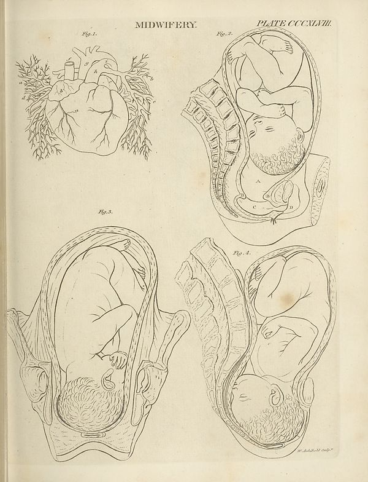

Source · scan and Parse blocks
Layers 1

Parse text by block reading order
- 0PictureMIDWIFERY PLATE CCCXLVII. Fig. 1. Fig. 2. Fig. 3.
Provenance page_id, checksum, Parse model
- page_id
- britannica:309f765b1ecc83e0a7f7762e44b4a927a7555443:train:1400
- sha256
- 2d754e996979c6641f694d6cedb375295f8581717f69010bf705075f8dd5de9a
- Parse
- nvidia/nemotron-3.5-parse · finish stop